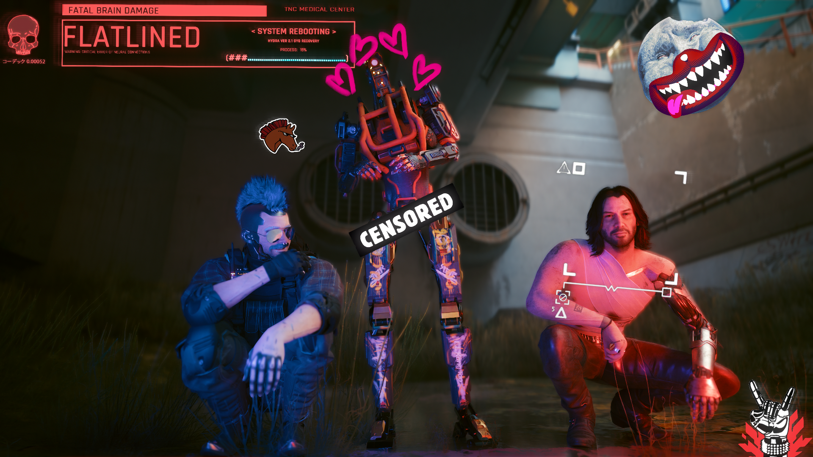

Cyberpeak
behehe
Where is
orionnnn
I really love cyberpunk I feel like a netrunner in this class
hacks furiously

Screenshot I took using photomode in game
I've spent so many hours in that game, much of my enjoyment now is garnered from playing in photomode.
Although that isn't to say the gameplay gets boring, I always find that fun.
But I will say after having played through the main story 8+ times, I do get bored during some sections of it and definitely don't pay as much attention as I did in my earlier playthroughs
To environment